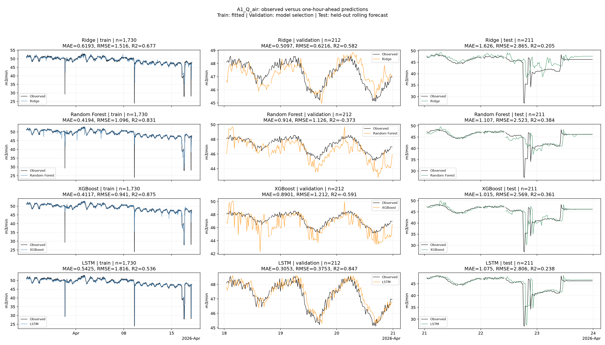
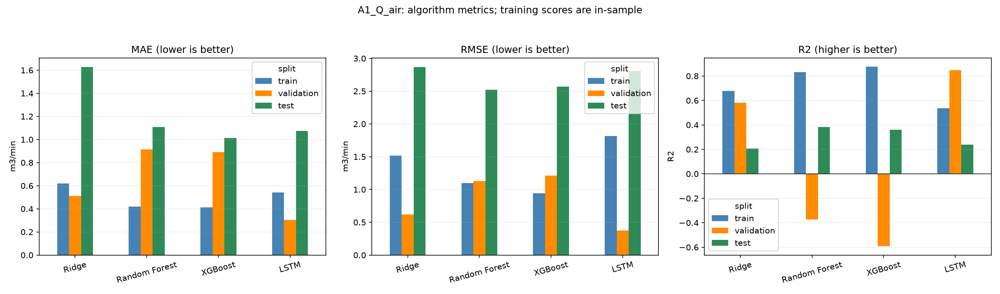

Train labels before 2026-04-18; validation labels before 2026-04-21; test origins from 2026-04-21. The split figure shows only the final seven days; training still uses all available earlier history. Test metrics never select models. R2 is undefined for constant labels. Recorded flows are predicted; this is not an operating recommendation.
| model | target | unit | algorithm | split | n | MAE | RMSE | R2 | constant_target |
|---|---|---|---|---|---|---|---|---|---|
| a1_air_flow | A1_Q_air | m3/min | Ridge | train | 1730 | 0.619282 | 1.515829 | 0.676698 | False |
| a1_air_flow | A1_Q_air | m3/min | Ridge | validation | 212 | 0.509653 | 0.621585 | 0.581544 | False |
| a1_air_flow | A1_Q_air | m3/min | Ridge | test | 211 | 1.625849 | 2.865321 | 0.205327 | False |
| a1_air_flow | A1_Q_air | m3/min | Random Forest | train | 1730 | 0.419387 | 1.096460 | 0.830842 | False |
| a1_air_flow | A1_Q_air | m3/min | Random Forest | validation | 212 | 0.914026 | 1.125817 | -0.372725 | False |
| a1_air_flow | A1_Q_air | m3/min | Random Forest | test | 211 | 1.106788 | 2.522977 | 0.383876 | False |
| a1_air_flow | A1_Q_air | m3/min | XGBoost | train | 1730 | 0.411656 | 0.941030 | 0.875401 | False |
| a1_air_flow | A1_Q_air | m3/min | XGBoost | validation | 212 | 0.890070 | 1.211910 | -0.590702 | False |
| a1_air_flow | A1_Q_air | m3/min | XGBoost | test | 211 | 1.014574 | 2.568765 | 0.361309 | False |
| a1_air_flow | A1_Q_air | m3/min | LSTM | train | 1730 | 0.542542 | 1.816325 | 0.535811 | False |
| a1_air_flow | A1_Q_air | m3/min | LSTM | validation | 212 | 0.305284 | 0.375278 | 0.847470 | False |
| a1_air_flow | A1_Q_air | m3/min | LSTM | test | 211 | 1.075166 | 2.806317 | 0.237718 | False |


